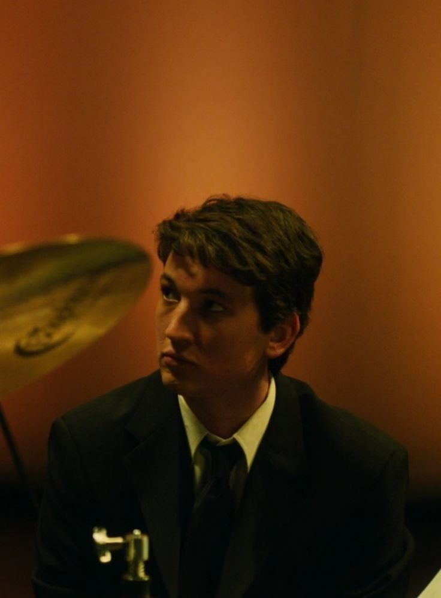
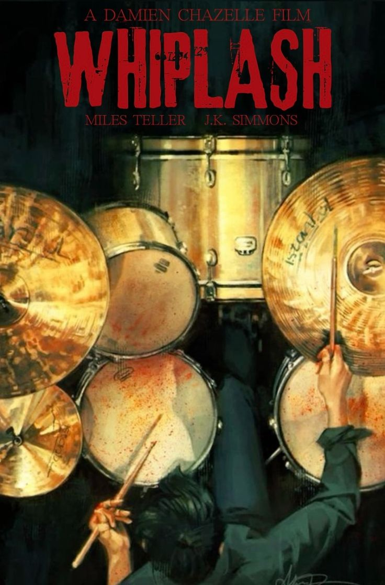

Drama, Music
2014
106 minutes
Damien Chazelle
Whiplash follows Andrew Neiman, a jazz drummer studying at a prestigious music conservatory. He is mentored by Terence Fletcher, who pushes his students to their limits. Andrew becomes obsessed with achieving greatness, leading to an intense struggle between ambition, perfection, and personal sacrifice.